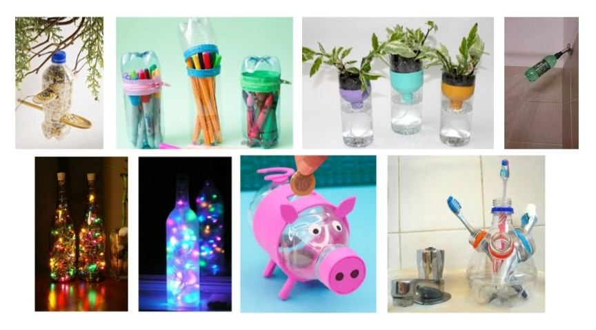
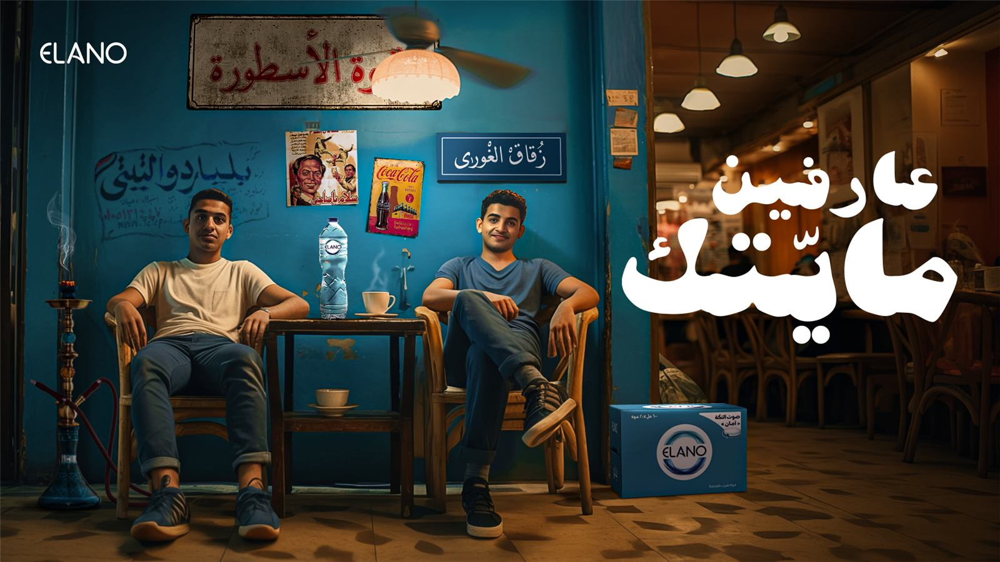
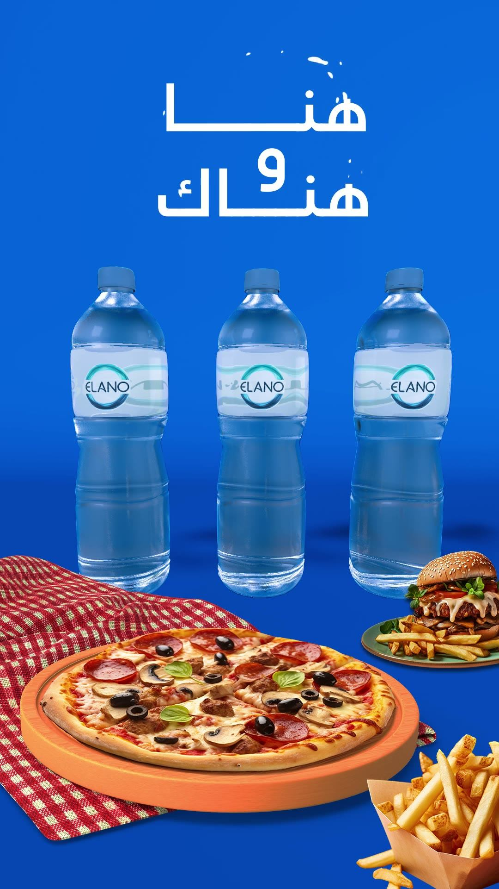
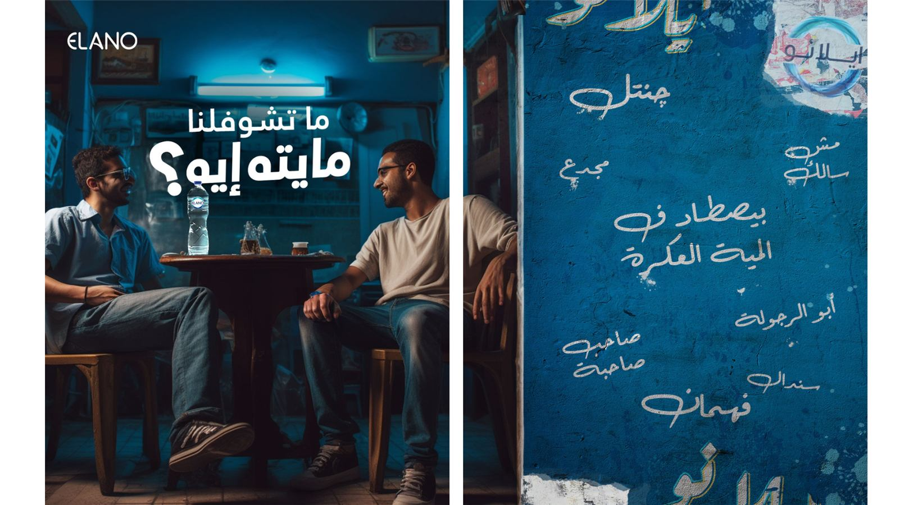
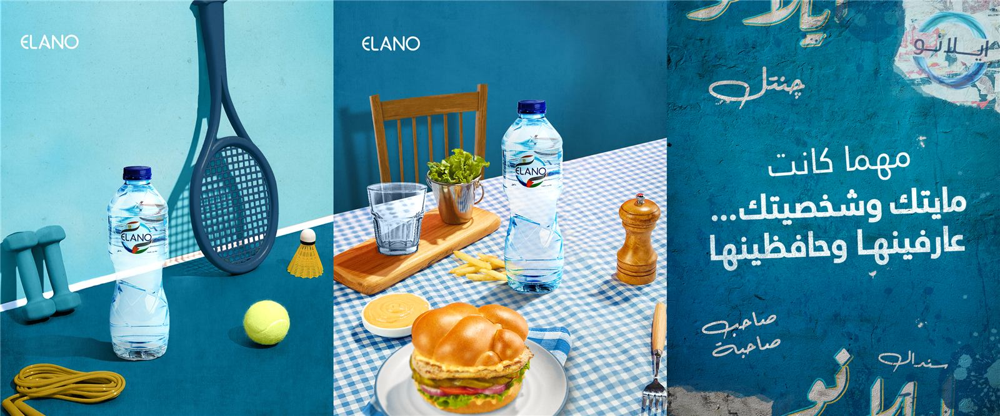
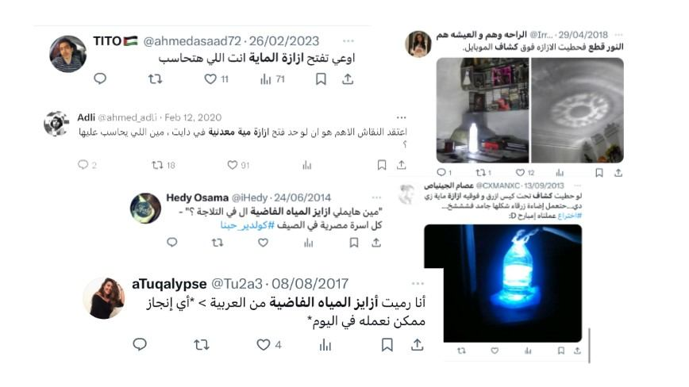

Elano Water was established in 2020 to provide the market with high-quality bottled water products covering the deficit between high demand and current production volume.
This boycott is about supporting local. We want Elano to be the brand Egyptians feel good about buying — fun, reliable, and one of us.
21–35 year-old Egyptians feel a disconnect between their personal values and the practices of the brands they purchase.
Bottled water finds authentic, unusual, and creative applications among Egyptians.

Show them that we are a part of this Egyptian authenticity.
Step 1: conceptual copy launch. Step 2: social posts showing the brand's Egyptian authenticity. Step 3: TikTok as an untackled channel for Gen Z and millennials (#مايتك_إيه). Step 4: UGC activation — audiences share their moments with Elano showcasing Egyptian creativity, boosted by value-aligned influencers; UGC then builds the brand's TikTok account.





We knew Egyptians might have a unique perspective on bottled water. We used social listening to pinpoint those specific ways of thinking, which became the backbone of our strategy.
